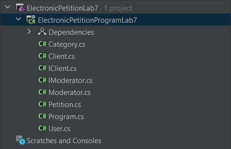

1. Тема, мета та постановка задачі ЛР №7
Тема: ВИКЛЮЧНІ СИТУАЦІЇ.
Мета: придбати практичні навички роботи з виключними ситуаціями, які виникають при роботі програми.
Постановка задачі:
До програмного коду попередніх лабораторних робіт добавити та описати;
1. виключення, яке можуть виникати при некоректній авторизації;
2. виключення, з застосуванням фільтрів виключення;
3. виключення, які виникають при обробці масивів ;
4. системні виключення;
5. власні виключення;
6. протестувати програму.
7. Зробити висновки.
2. UML-діаграма класів

3. Кодування ПЗ
3.1. Файлова структура проекту
3.2 Програмний код
ArgumentException
ArgumentException
ArgumentExceptionMain
ArgumentOutOfRangeException
DivideByZeroException
IndexOutOfRangeException
InvalidCastException
NullReferenceException
OwnException
OwnExceptionMain
Виконання програми
4.1 Посилання на папку з проектом
Посилання на гугл-диск4.2 Exe-file
.exe5 Висновок
При виконанні лабораторної роботи ми придбали практичні навички роботи з виключними ситуаціями, які виникають при роботі програми.